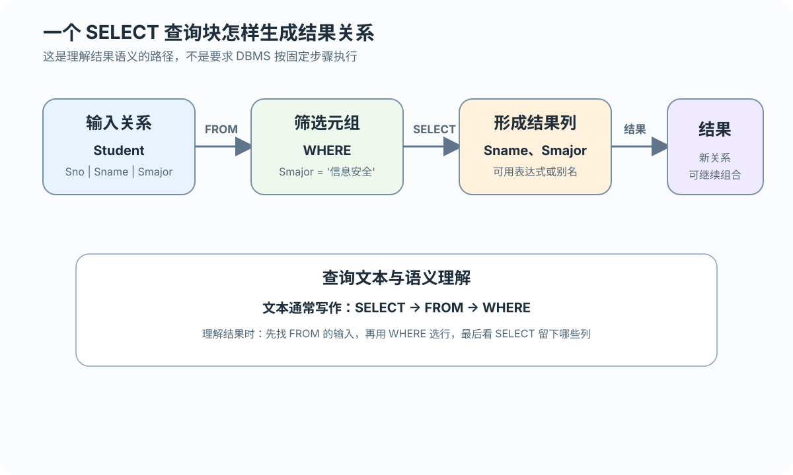
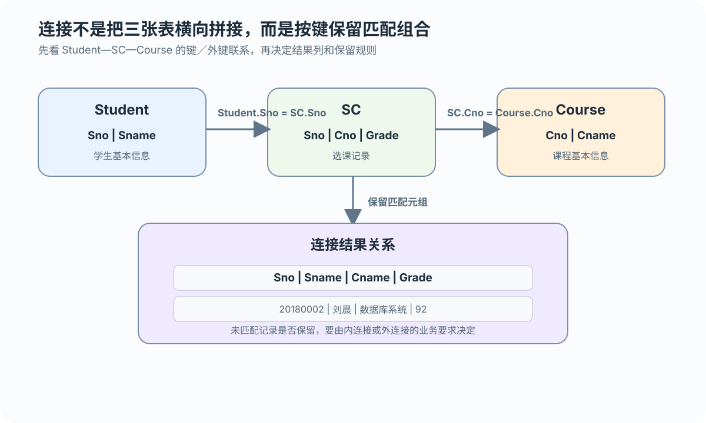
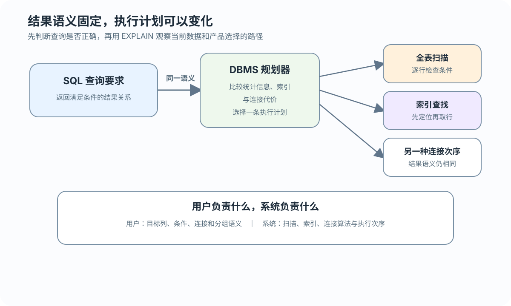

成绩下限
Grade >= 80 保留成绩达到 80 的记录
先写清要哪些列、从哪些表取、保留哪些行，再选择 SQL 子句
 VER. 2608
Built with impress.js
VER. 2608
Built with impress.js
把“谁选了哪门课、得多少分”拆成目标列、表和筛选条件，再写成 SQL
NULL、别名作用域和目标 DBMS 支持的语法，并区分查询结果与执行计划FROM 提供输入关系，WHERE 筛选元组，SELECT 形成结果列

01
02
03SELECT Sname, Smajor
FROM Student
WHERE Smajor = '信息安全';按结果语义，FROM 提供查询对象，WHERE 选择元组，SELECT 形成结果列；这不等于 DBMS 固定的实际执行顺序
投影改变列，DISTINCT 决定结果中是否消除重复
| 写法 | 结果语义 | 适用判断 |
|---|---|---|
SELECT Sno FROM SC | 选出每条选课记录的学号 | 同一学生可出现多次 |
SELECT DISTINCT Sno FROM SC | 只保留不同学号 | 需要学生集合 |
SELECT Sname AS name FROM Student | 选择列并改结果列标题 | 结果需要更清楚的列名 |
SELECT * FROM Student | 选择全部列 | 临时查看或探索数据 |
关系代数常按集合理解，SQL 默认保留重复行
先把自然语言中的比较、集合、模式和缺失状态写成可检查的元组条件
Grade >= 80 保留成绩达到 80 的记录
Cno IN ('81001', '81002') 保留两门指定课程
Teachingclass LIKE '81001-%' 保留课程 81001 的教学班记录
Grade IS NULL 判断尚无成绩；三值逻辑留到 3.5
混用 AND、OR、NOT 时，用括号明确哪些条件先组合；WHERE 仍在分组前逐行判断
ORDER BY 作用于查询结果，LIMIT 控制返回行数
01
02
03
04
05
06-- MySQL 风格分页语法
SELECT Sno, Grade
FROM SC
WHERE Cno = '81003'
ORDER BY Grade DESC, Sno ASC
LIMIT 10 OFFSET 0;| 子句 | 作用 |
|---|---|
ORDER BY Grade DESC | 按成绩降序排列结果 |
LIMIT 10 | 只返回前 10 行 |
LIMIT 5 OFFSET 2 | 跳过 2 行后返回 5 行 |
先得到满足条件的结果，再决定显示顺序与窗口；示例使用 MySQL 风格 LIMIT/OFFSET，授课时按实际版本核对，分页还要有稳定的次排序列
没有分组时，聚集函数作用于整个满足条件的结果
01
02
03SELECT COUNT(*) AS enrollment_count
FROM SC
WHERE Semester = '20202';COUNT(*) 统计行；COUNT(column) 统计非空值；COUNT(DISTINCT column) 统计不同值
计算数值列的总和与平均值
寻找一列中的极值
WHERE 在分组前筛选元组，HAVING 在分组后筛选组
01
02
03
04
05SELECT Cno, COUNT(*) AS enrollment_count
FROM SC
WHERE Semester = '20202'
GROUP BY Cno
HAVING COUNT(*) > 10;| 条件位置 | 作用对象 | 例子 |
|---|---|---|
WHERE | 单个元组 | 学期为 20202 |
GROUP BY | 形成分组 | 按课程号分组 |
HAVING | 一个分组 | 人数大于 10 |
先用 WHERE 筛选行，再用 GROUP BY 分组，最后用 HAVING 筛选组
结果列来自多个表，连接条件决定哪些元组能够配对

01
02
03
04
05-- Student.Sno = SC.Sno；SC.Cno = Course.Cno
SELECT s.Sno, s.Sname, c.Cname, sc.Grade
FROM Student AS s
JOIN SC AS sc ON s.Sno = sc.Sno
JOIN Course AS c ON sc.Cno = c.Cno;先确认连接键是否唯一，再检查每次 JOIN 是否会一对多地复制行；结果列来自中间连接结果，不只是原始表
先定哪些行能配对、没配上的留不留；同一张表重复出现时分别起别名
| 判断维度 | 常见选择 | 先问什么 |
|---|---|---|
| 连接谓词 | 等值、非等值、复合条件 | 哪些元组能够配对？ |
| 保留规则 | 内连接、左／右外连接 | 未匹配元组是否保留？ |
| 表的组合 | 两表、多表、自身连接 | 需要几个表或表别名？ |
连接判断包括配对条件、未匹配行是否保留和表的组合；使用 FULL OUTER JOIN 等写法前，按目标 DBMS 版本核对官方文档
左外连接可以列出 Student 中所有学生，包括尚未选课的学生
01
02
03SELECT s.Sno, s.Sname, sc.Cno, sc.Grade
FROM Student AS s
LEFT OUTER JOIN SC AS sc ON s.Sno = sc.Sno;| 结果部分 | 内连接 | 左外连接 |
|---|---|---|
| 已选课学生 | 保留 | 保留 |
| 未选课学生 | 舍弃 | 保留并补空值 |
| 业务含义 | 只看匹配记录 | 以左表为完整主体 |
左外连接保留左表全部元组，右表无匹配时用 NULL 补位；WHERE 再筛选右表列，可能把这些主体行排除
外层查询把内层查询返回的集合用于条件判断；本例是不相关子查询
01
02
03
04
05
06SELECT Sno, Sname
FROM Student
WHERE Smajor IN
(SELECT Smajor
FROM Student
WHERE Sname = '刘晨');先单独运行内层查询，确认它返回的是专业集合；外层再用 IN 判断哪些学生属于这个集合
单值用 = 或 >，集合用 IN、ANY 或 ALL，存在性用 EXISTS 判断
01
02
03
04
05
06
07
08
09-- EXISTS：只判断是否有匹配行
SELECT s.Sname
FROM Student AS s
WHERE EXISTS (
SELECT 1
FROM SC AS sc
WHERE sc.Sno = s.Sno
AND sc.Cno = '81001'
);先标出父查询列，再判断每一行对应的内层结果
01
02
03
04
05
06SELECT x.Sno, x.Cno
FROM SC x
WHERE x.Grade >=
(SELECT AVG(y.Grade)
FROM SC y
WHERE y.Sno = x.Sno);y.Sno = x.Sno 是相关条件：x.Sno 来自父查询，y.Sno 来自内层查询。Grade 为 NULL 时的比较留到 3.5。相同问题也可以用连接、聚集或派生表表达，应先验证结果是否正确，再比较写法
先检查列数、对应列类型、列顺序与业务含义，再决定并、交或差
01
02
03
04
05
06
07SELECT Sno
FROM SC
WHERE Cno = '81001'
UNION
SELECT Sno
FROM SC
WHERE Cno = '81002';| 运算 | 结果 | 业务提问 |
|---|---|---|
UNION | 两个结果的并集 | 满足任一条件 |
INTERSECT | 两个结果的交集 | 同时满足两个条件 |
EXCEPT | 左结果减去右结果 | 满足左条件且排除右条件 |
不加 ALL 的集合运算默认按集合语义去重；UNION ALL 明确保留重复行。标准 SQL 名称不保证每个产品都以相同方式支持，授课时按官方文档核对
派生表让主查询继续处理一个已经整理过的中间关系
01
02
03
04
05
06
07SELECT SC.Sno, SC.Cno
FROM SC
JOIN (SELECT Sno, AVG(Grade) AS Avg_grade
FROM SC
GROUP BY Sno) AS Avg_SC
ON SC.Sno = Avg_SC.Sno
WHERE SC.Grade >= Avg_SC.Avg_grade;派生表必须有别名，例如 Avg_SC(Sno, Avg_grade)；它只在当前查询中有效，不作为持久化对象保存，也不是视图
SQL 描述结果条件，数据库管理系统（DBMS）再选择具体访问方式

01
02
03
04EXPLAIN
SELECT s.Sname, c.Cname, sc.Grade
FROM Student s JOIN SC sc ON s.Sno = sc.Sno
JOIN Course c ON sc.Cno = c.Cno;用户先写结果语义，DBMS 再选择执行计划；EXPLAIN 可以观察当前产品的扫描、索引和连接顺序，具体语法查对应版本手册
任选订单或玩家数据中的一个查询，不先背关键词，按三步画出结果形成过程
指出需要哪些关系、最终显示哪些列，以及一行结果代表什么
标出行筛选、分组、连接、子查询或集合组合，并给关键中间关系命名
解释重复从哪里来、空值怎样进入、派生表在哪个查询块有效，以及哪些语法需要核对产品版本
先用样例数据核对列、行数和每行含义，再比较不同写法与执行计划，并查目标 DBMS 是否支持所用语法
WHERE、GROUP BY、HAVING 和 SELECT？每一步产生什么结果？WHERE 中筛选右表课程号，未选课学生为什么可能再次消失？=、IN 或 EXISTS？怎样判断一个子查询是否引用了父查询当前行？EXPLAIN 还能提供什么不同证据？